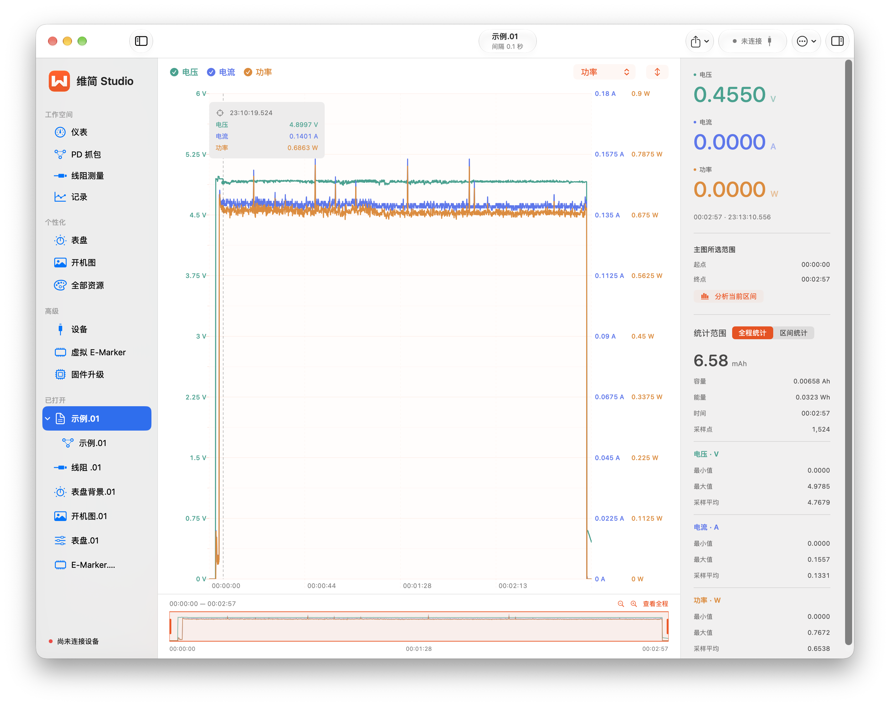
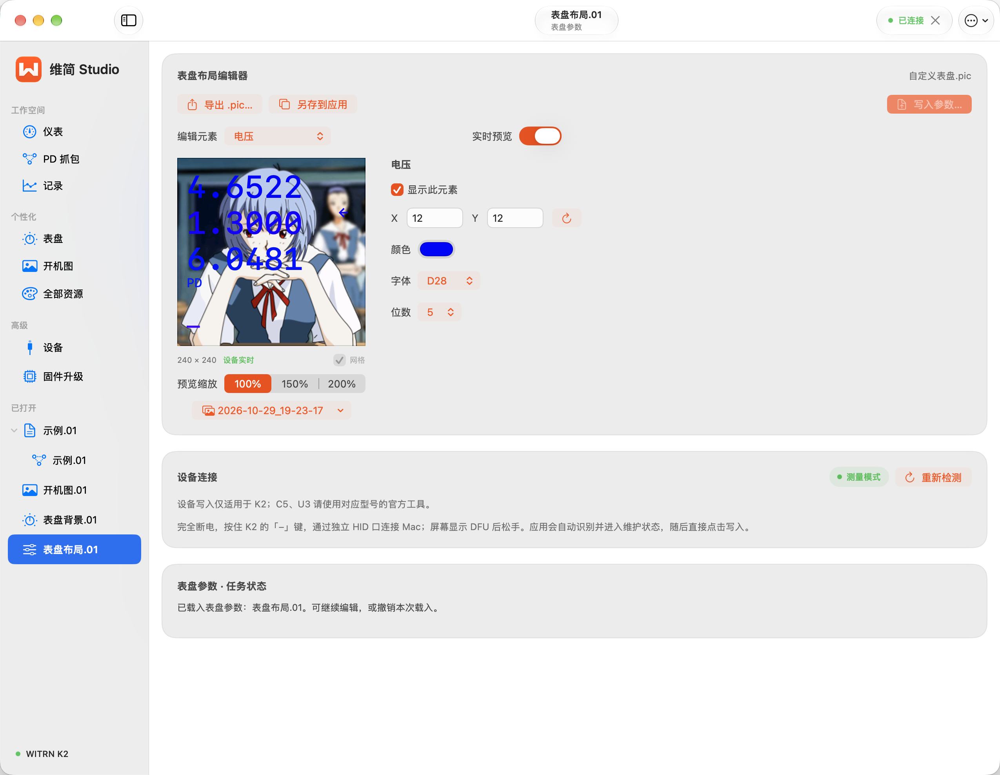

01 / LIVE
沿着曲线，找变化。
电压、电流、功率叠加显示，配合独立刻度、光标和全程导航，定位一次波动或一段充电过程。
查看测量界面WITRN USB 功率表 · 原生 macOS 上位机
观察充电曲线，保存测量记录，回看 USB PD 协商。再为你的功率表，设计一张自己的表盘。

01 / 从观察到分析
先看实时表现，再保存完整过程。
值得关注的那一段，随时回来细看。
电压、电流、功率叠加显示，配合独立刻度、光标和全程导航，定位一次波动或一段充电过程。
查看测量界面持续保存 CSV，支持暂停与继续。导入历史记录，重新查看曲线，比较全程和选定区间的容量与能量。
查看记录分析在 K2 上捕获和筛选 PD 报文，查看 PDO / RDO、PPS 解码及原始十六进制；保存 K2PD，供之后离线重放。
查看协议工具想继续深入？ K2 还提供线阻结果记录与虚拟 E-Marker 配置。
浏览全部功能与截图02 / 属于你的表盘
导入喜欢的图片，调整构图，再把电压、电流和功率放到顺手的位置。从背景到布局，都在 Mac 上完成。

表盘适配 K2、C4 / C4L / C5；开机图限 K2。预览使用替代字体，新增维护路径仍待实机验证。
03 / 先确认，再开始
源码包含 19 款型号的测量适配路径。
PD、表盘和维护功能按型号分别开放。
曲线、CSV、PD 抓包，以及限定固件的线阻读取；表盘、开机图和维护入口另有设备要求。
查看 K2 范围共同测量协议；表盘背景与布局采用独立路径，要求固件 3.0 起，并确认设备 DFU 身份。
查看 C4 / C5 范围U3、A2、U2 等系列接入曲线与记录；部分旧款采用实验性适配，功能和固件需逐一核对。
查看全部 19 款型号型号数量表示源码适配范围。新增型号和维护功能尚待实机验证，下载包是否包含相应能力，请核对发行版说明。
本网站介绍 3.3.0 的功能与适配范围。具体下载文件、版本功能和安装要求，以 Releases 中对应发行版的说明为准。
Intel Mac 用户请查看项目源码说明。第一次连接，请准备支持数据传输的 USB 线。
阅读安装与上手指南这是 Andyshenjx 独立开发的第三方工具，与 WITRN / 维简官方无关联，未获官方授权或背书。相关名称、商标与标识归各自权利人所有。
功能按型号分别开放。PD 抓包、线阻、固件与虚拟 E-Marker 设备操作限 K2；C4 / C4L / C5 另有表盘路径。请在兼容性页面选择型号，核对固件要求和适配状态。
测量 CSV 需要点击「开始记录」。K2 的 PD 抓包默认在连接后独立保存，也可在设置中关闭。CSV 和 K2PD 是两种文件，详见观察与记录。
先检查数据线和电脑 HID 接口，再在「设备」页重新扫描，查看连接诊断中的输入计数与最近报告。按排查步骤检查，仍有问题时可附日志反馈。
让工具继续变好
分享使用体验、提交问题，或在 GitHub 留下一颗 Star，都能帮助项目继续完善。你也可以通过赞赏支持这个独立项目。
在 GitHub 关注项目感谢每一份反馈与支持。